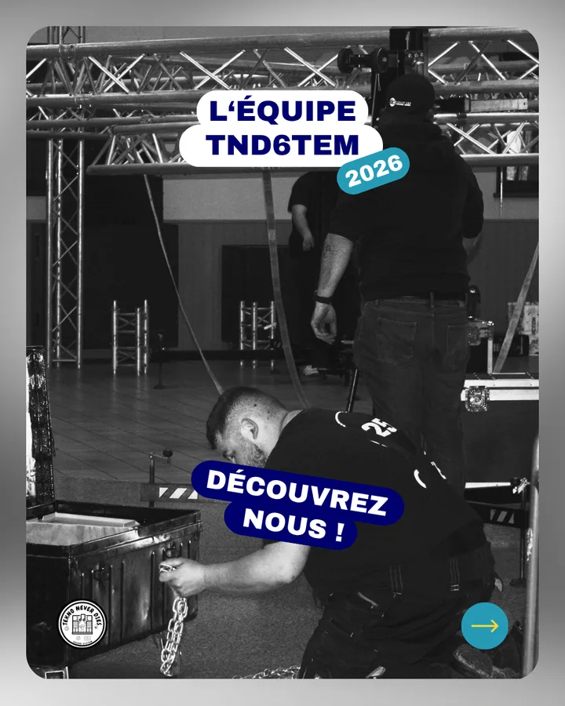

tnd6tem — lauterbourg
L'association

Une association dédiée à la musique, aux événements et au partage de savoir-faire autour de la scène tekno.
Qui sommes-nous ?
Tekno Never Dies est une association qui développe des projets musicaux et événementiels et organise des rendez-vous autour de la scène tekno.
[CONTENU À REMPLACER] Cette présentation générale sera complétée avec l'histoire, les valeurs et les projets précis de l'association.
Informations publiques vérifiées

Une association déclarée
- Nom
- TEKNO NEVER DIES (TND)
- SIREN
- 939 301 768
- Siège déclaré
- 51 avenue Georges Clemenceau, 67630 Lauterbourg
- Création du sound system
- 26 juin 2023
- Création de l'association
- 4 décembre 2024
- Activité
- Arts du spectacle vivant
L'équipe TND6TEM
[PROFILS À VALIDER] Appuie sur une photo pour en savoir plus sur chaque membre.


Nos actions
- Organisation d'événements musicaux
- Développement et entretien d'un parc de matériel
- Accompagnement technique de projets
- Partage de connaissances et entraide
Nos valeurs
- Autogestion et entraide
- Respect des personnes et des lieux
- Transmission du savoir-faire
- Culture et création